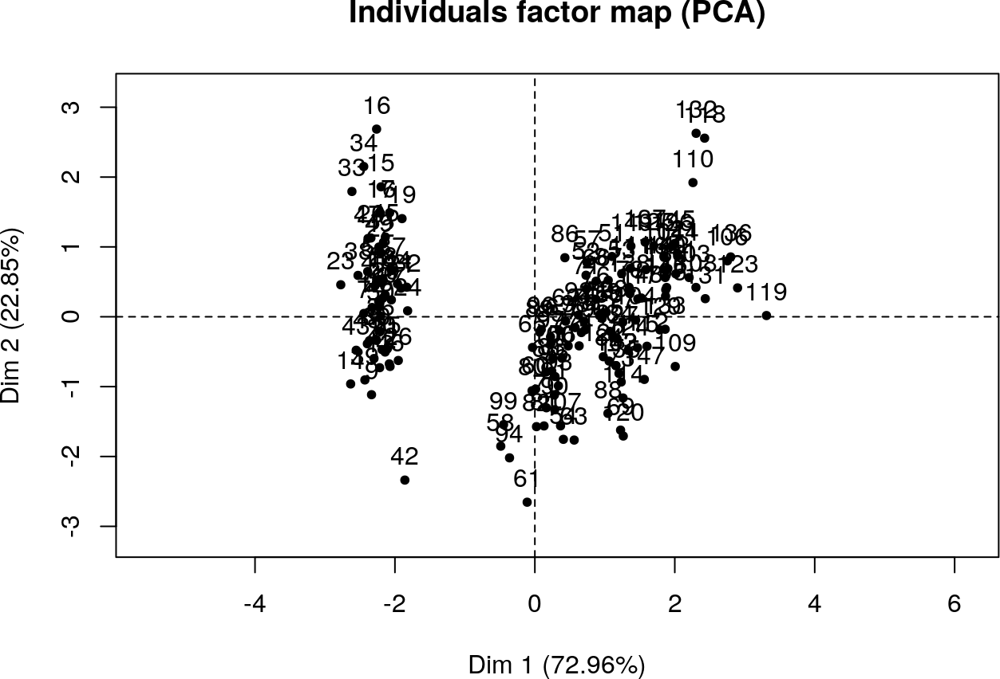
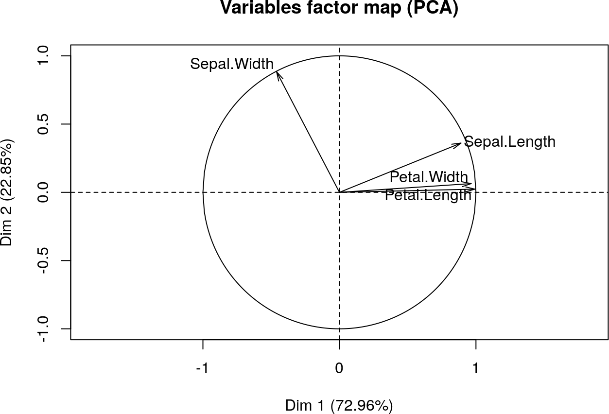
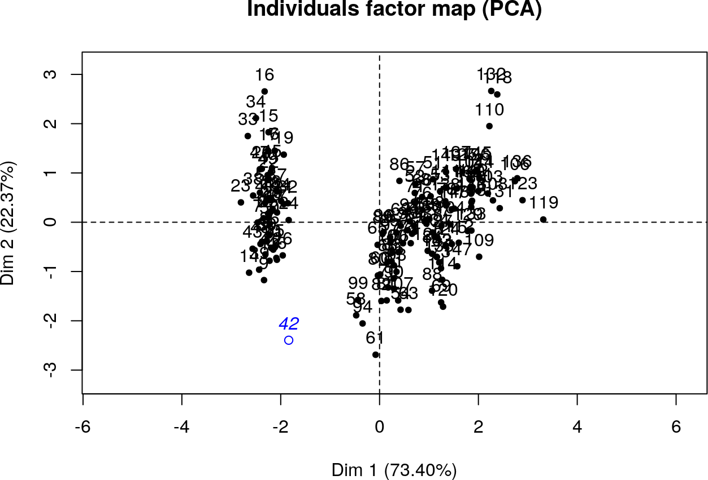

4 Analyse quantitative multivariée : analyse en composantes principales
Dans ce chapitre, on considère :
- un corpus de données de \(N\) individus ;
- \(p\) variables quantitatives \(X_1, \ldots, X_p\).
Pour tout entier \(i\) entre \(1\) et \(N\) et tout entier \(j\) entre \(1\) et \(p\), on note \(x_{i,j}\) la valeur de la variable \(X_j\) pour le \(i\)-ème individu.
On note également \(X\) la matrice à \(N\) lignes et \(p\) colonnes \(X = \left(x_{i,j}\right)_{1 \leq i \leq N, 1 \leq j \leq p}\), de sorte que \(X_j\) soit sa \(j\)-ème colonne pour tout entier \(j\) entre \(1\) et \(p\).
L’analyse en composantes principales (ACP ou PCA en anglais pour Principal Component Analysis) est une méthode de réduction des dimensions. Il s’agit de décrire de manière la plus précise possible l’ensemble des variables quantitatives \(X_1, \ldots, X_p\) par un faible nombre de combinaisons des celles-ci, appelées composantes principales. Lorsque l’on a besoin d’une représentation graphique efficace, on cherchera ainsi à isoler deux (ou trois) composantes principales.
Dans tous les exemples, on utilise le corpus de données des iris de Gaspésie (Anderson 1935) fourni avec le logiciel R.
str(iris)
'data.frame': 150 obs. of 5 variables:
$ Sepal.Length: num 5.1 4.9 4.7 4.6 5 5.4 4.6 5 4.4 4.9 ...
$ Sepal.Width : num 3.5 3 3.2 3.1 3.6 3.9 3.4 3.4 2.9 3.1 ...
$ Petal.Length: num 1.4 1.4 1.3 1.5 1.4 1.7 1.4 1.5 1.4 1.5 ...
$ Petal.Width : num 0.2 0.2 0.2 0.2 0.2 0.4 0.3 0.2 0.2 0.1 ...
$ Species : Factor w/ 3 levels "setosa","versicolor",..: 1 1 1 1 1 1 1 1 1 1 ...La dernière variable est qualitative, donc elle ne sera pas utilisée pour l’analyse :
4.1 Formulation mathématique
4.1.1 Matrice de variance-covariance
Alors \(V = \dfrac{1}{N}\bar{X}^\top \bar{X}\).
En R : Calculer la matrice de variance-covariance de variables quantitatives
La fonction
covpeut prendre en paramètres un vecteur représentant une seule variable ou une matrice réprésentant plusieurs variables. On adapte alors la fonctioncov.ppour prendre en compte le cas des matrices : en effet, la fonctionlengthne convient plus.cov.p <- function(x, y = NULL, use = "everything") { cov(x, y, use = use) * (dim(x)[1] - 1) / dim(x)[1] }La fonction
dimrenvoie le vecteur des dimensions d’une matrice.
Lorsque les différentes variables représentent des données d’ordres de grandeur très divers, les variables dont l’ordre de grandeur est élevée seront prépondérantes dans l’analyse.
On changerait donc artificiellement les résultats de l’ACP en changeant simplement l’unité (au sens physique du terme) d’une variable.
Une analyse en composantes principales est dite normée si et seulement si elle est effectuée sur les données normalisées \(X^*\) (au lieu des données brutes \(X\)).
En R : Calculer la matrice de variance-covariance de variables quantitatives normalisées, i.e. la matrice des corrélations
La fonction
corpeut prendre en paramètres un vecteur représentant une seule variable ou une matrice réprésentant plusieurs variables.
4.1.2 Composantes principales
Tout couple de composantes principales distinctes \((C, C')\) est décorrélé : \(c_{C,C'} = 0\).
Soit \(C\) et \(C'\) deux composantes principales. Alors \(0 = c_{C,C'} = \dfrac{1}{N}C^\top C'\) : donc \(C^\top C' = 0\) et \(C\) et \(C'\) sont orthogonales.
Corollaire 4.1 Une famille de composantes principales contient au plus \(p\) éléments. De plus :
- la matrice de variance-covariance d’une base de composantes principales est diagonale ;
- toute base de composantes principales est une base de diagonalisation de la matrice de variance-covariance initiale.
Théorème 4.1 Il existe toujours une base orthonormale de composantes principales.
Elle est issue de la matrice de passage de la diagonalisation de la matrice de variance-covariance.Démonstration. La matrice de variance-covariance est par construction symétrique, donc elle admet une base orthonormale de diagonalisation.
La matrice de passage traduit alors la conversion entre la base initiale (ici la base canonique) et la base de diagonalisation.Une ACP constitue donc en une diagonalisation de la matrice \(V\) (ou de la matrice \(R\) dans le cas d’une ACP normée) :
- la matrice diagonale étant la matrice de variance-covariance des composantes principales, les valeurs propres sont donc les variances des composantes principales ;
- la matrice de passage fournit l’expression des composantes principales en fonction des variables centrées (ou centrées réduites dans le cas d’une ACP normée).
En R : Effectuer une analyse en composantes principales normée de variables quantitatives
Nous allons réaliser une ACP normée, donc sur la matrice de corrélations. La fonction
eigencalcule la décomposition en valeurs propres d’une matrice et le champvaluesdonne le vecteur des valeurs propres.
4.1.3 Premières interprétations
La quantité totale d’information du corpus de données est donnée par la somme des variances des variables (normalisées ou non en fonction de l’ACP considérée).
Comme les variances sont les coefficients diagonaux de la matrice de variance-covariance, la quantité totale d’information est donnée par la trace de cette matrice.
La trace étant invariante par changement de base, la quantité totale d’information est donc conservée.
En R : Vérifier la conservation de la quantité totale d’information lors d’une ACP normée
Il s’agit alors de choisir les composantes principales contenant le plus d’information, donc celles associées aux valeurs propres les plus élevées. Un indicateur important est alors la proportion d’information expliquée par les composantes principales choisies.
En R : Calculer les pourcentages d’information expliqués par les premières composantes principales dans le cas d’une ACP normée
On ramène la somme du vecteur à un en divisant par la somme des valeurs propres, puis on utilise la fonction
cumsumqui calcule le vecteur des sommes cumulées d’un vecteur donné.lambdas <- eigen(cor(data))$values lambdas / sum(lambdas) [1] 0.729624454 0.228507618 0.036689219 0.005178709 cumsum(lambdas / sum(lambdas)) [1] 0.7296245 0.9581321 0.9948213 1.0000000Donc :
- la première composante principale \(C_1\) explique 72.96% de l’information fournie par les données ;
- la deuxième composante principale \(C_2\) explique 22.85% de l’information fournie par les données ;
soit 95.81% à elles deux.
4.2 Représentations graphiques
Cette première analyse peut être avantageusement complétée par des réprésentations graphiques efficaces.
En R : Installer, charger et utiliser la bibliothèque
FactoMineRCette bibliothèque sera utilisée dans tout le reste du chapitre. Cette bibiliothèque n’étant pas installée par défault, il faut donc l’installer :
Elle doit être chargée avant toute utilisaton :
On utilisera principalement la fonction
PCA:
scale.unitspécifie si l’ACP est normée (cas par défaut) ou non ;ncpspécifie le nombre maximal de composantes principales (5 par défaut) ;graphspécfie si les graphiques doivent être générés (cas par défaut) ou non ;ind.supspécifie les individus n’étant pas pris en compte dans l’analyse : ils seront toutefois affichés dans la représentation dans l’espace des individus ;quanti.supspécifie les variables quantitatives n’étant pas pris en compte dans l’analyse : elles seront toutefois affichés dans la représentation dans l’espace des variables ;quali.supspécifie les variables qualitatives dignes d’intêret : elles seront toutefois affichés dans la représentation dans l’espace des individus par un individu moyen pour chaque modalité ;graphspécfie si les graphiques doivent être générés (cas par défaut) ou non ;axesdésigne les composantes principales utilisées comme axes de réprésentation graphiques (par défaut, ce sont les deux premières).Un appel simple effectue l’analyse, génère les représentations graphiques et décrit les champs du résultat.

**Results for the Principal Component Analysis (PCA)** The analysis was performed on 150 individuals, described by 4 variables *The results are available in the following objects: name description 1 "$eig" "eigenvalues" 2 "$var" "results for the variables" 3 "$var$coord" "coord. for the variables" 4 "$var$cor" "correlations variables - dimensions" 5 "$var$cos2" "cos2 for the variables" 6 "$var$contrib" "contributions of the variables" 7 "$ind" "results for the individuals" 8 "$ind$coord" "coord. for the individuals" 9 "$ind$cos2" "cos2 for the individuals" 10 "$ind$contrib" "contributions of the individuals" 11 "$call" "summary statistics" 12 "$call$centre" "mean of the variables" 13 "$call$ecart.type" "standard error of the variables" 14 "$call$row.w" "weights for the individuals" 15 "$call$col.w" "weights for the variables"Les principaux champs seront présentés en détail au fur et à mesure.

En R : récupérer les premiers résultats de l’ACP avec
PCALe champ
eigdu résultat de l’appel dePCAdonne, pour chaque composante principale (triée par variance décroissante), trois types d’informations :
- en première colonne, sa variance (i.e. la valeur propre) ;
- en deuxième colonne, le pourcentage de la variance totale ;
- en troisième colonne, le pourcentage cumulé de la variance : ainsi, les trois premières composantes principales cumulent 99.48213% de la variance totale.
4.2.1 dans l’espace des variables
On souhaite représenter les variables initiales pour observer leurs potentielles corrélations en les plaçant dans le repère induit par les deux premières composantes principales.
En R : Calculer et représenter les projections des variables initiales sur le plan des deux premières composantes principales
On applique la fonction
plotsur le résultat de la fonctionPCA:
Les coordonées des vecteurs sont disponibles dans le sous-champ
coorddu champvardu résultat de la fonctionPCA:
Cette représentation graphique permet d’abord d’étudier la proportion d’information expliquée par les deux premières composantes principales pour chaque variable initiale. Le vecteur représentant chaque variable est de norme un dans l’espace de toutes les composantes principales. Donc :
- un vecteur projeté de norme proche de un signifie que les contributions selon les autres composantes principales sont faibles et que ces dernières expliquent peu la variable associée ;
- un vecteur projeté de norme proche de zéro signifie que les contributions selon les deux premières composantes principales sont faibles et que ces dernières expliquent peu la variable associée.
En R : Calculer et interpréter la norme des vecteurs projetés
On utilise la fonction
rowSumsqui effectue la somme partielle d’une matrice selon ses lignes :projections <- pca$var$coord[,1:2] sqrt(rowSums(projections * projections)) Sepal.Length Sepal.Width Petal.Length Petal.Width 0.9605200 0.9954493 0.9918316 0.9670989Les normes des quatre vecteurs très proches de un (ce qui confirme l’impression visuelle), donc les quatre variables sont très bien expliquées par les deux composantes principales.
Remarque. On confirme ainsi la proportion élevée de la quantité d’information totale (95,81%) expliquée par les deux composantes principales \(C_1\) et \(C_2\).
Cette représentation permet ensuite, pour les variables dont les normes des vecteurs projetés sont suffisamment élevées, d’étudier leurs corrélations (linéaires) respectives :
- des vecteurs orthogonaux traduisent une décorrélation linéaire presque complète ;
- des vecteurs colinéaires dans le même sens traduisent des vecteurs presque complètement corrélées avec un sens de progression commun (quand l’une des variables augmente, l’autre aussi) ;
- des vecteurs colinéaires dans des sens différents traduisent des vecteurs presque complètement corrélées avec un sens de progression antagoniste (quand l’une des variables augmente, l’autre diminue et vice-versa).
En R : Calculer et interpréter les produits scalaires des vecteurs projetés entre eux
On utilise le produit matriciel
%*%et la fonctiontqui transpose une matrice pour obtenir la matrice des produits scalaires respectifs :projections %*% t(projections) Sepal.Length Sepal.Width Petal.Length Petal.Width Sepal.Length 0.92259864 -0.09109425 0.8911004 0.8820872 Sepal.Width -0.09109425 0.99091932 -0.4355879 -0.3875343 Petal.Length 0.89110035 -0.43558792 0.9837300 0.9583285 Petal.Width 0.88208719 -0.38753432 0.9583285 0.9352804Comme toutes les projections ont une norme suffisamment élevée, l’analyse sera pertinente. L’impression visuelle est confirmée dans les points suivants notamment :
- le produit scalaire entre les projections de
Sepal.LengthetSepal.Lengthest faible (-0.0910943), donc ces deux variables sont peu corrélées ;- le produit scalaire entre les projections de
Petal.LengthetPetal.Widthest très proche de un (0.9583285), donc ces deux variables sont très corrélées et évoluent dans le même sens ;- le produit scalaire entre les projections de
Sepal.LengthetPetal.Lengthest élevé (0.8911004), donc ces deux variables sont corrélées (mais moins que précédemment) et évoluent dans le même sens.
Cette réprésentation peut permettre (sans certitude) enfin, en lien avec la représentation des individus, d’interpréter les composantes principales et d’identifier des zones.
En effet, la coordonnée d’un vecteur projeté est égale au coefficient de corrélation entre la variable associée et la composante principale liée à l’axe choisi dans le cas d’une ACP normée (dans le cas d’une ACP non normée, cela reste proportionnel).
En R : Identifier des zones, interpréter les composantes principales
Les corrélations entre les variables et les composantes principales sont disponibles dans le sous-champ
cordu champvardu résultat de la fonctionPCA.pca$var$cor Dim.1 Dim.2 Dim.3 Dim.4 Sepal.Length 0.8901688 0.36082989 -0.27565767 -0.03760602 Sepal.Width -0.4601427 0.88271627 0.09361987 0.01777631 Petal.Length 0.9915552 0.02341519 0.05444699 0.11534978 Petal.Width 0.9649790 0.06399985 0.24298265 -0.07535950On remarque que les valeurs sont identiques aux coordonnées calculées auparavant.
Les coefficients de corrélation \((\texttt{Petal.Length}, C_1)\) et \((\texttt{Petal.Width}, C_1)\) sont très proches de un (ce qui confirme l’impression visuelle). Donc \(C_1\) est presque complètement correlé avec ces deux variables.
\(C_1\) peut s’interpréter comme l’axe des dimensions du pétale :
- le demi-espace gauche correspond à des pétales de dimension faible (au-dessous de la moyenne) ;
- le demi-espace droit correspond à des pétales de dimension élevée (au-dessus de la moyenne).
L’interprétation de \(C_2\) comme l’axe des dimensions du sépale est moins évidente. On peut toutefois identifier des zones :
- le quart supérieur gauche correspond à des sépales de largeur élévée (au-dessus de la moyenne) ;
- le quart supérieur droit correspond à des sépales de longueur élévée (au-dessus de la moyenne) ;
- le quart inférieur gauche correspond à des sépales de longueur faible (au-dessous de la moyenne) ;
- le quart inférieur droit correspond à des sépales de largeur élévée (au-dessous de la moyenne).
4.2.2 dans l’espace des individus
On souhaite représenter les individus dans le repère induit par les deux premières composantes principales dont l’origine sera obtenue par la moyenne des individus.
En R : Calculer et représenter les projections des individus sur le plan des deux premières composantes initiales
On applique la fonction
plotsur le résultat de la fonctionPCA:Les coordonées des vecteurs sont disponibles dans le sous-champ
coorddu champinddu résultat de la fonctionPCA:pca$ind$coord Dim.1 Dim.2 Dim.3 Dim.4 1 -2.26470281 0.480026597 -0.127706022 -0.024168204 2 -2.08096115 -0.674133557 -0.234608854 -0.103006775 3 -2.36422905 -0.341908024 0.044201485 -0.028377053 4 -2.29938422 -0.597394508 0.091290106 0.065955560 5 -2.38984217 0.646835383 0.015738196 0.035922813 6 -2.07563095 1.489177523 0.026968294 -0.006608180 7 -2.44402884 0.047644198 0.335470401 0.036775557 8 -2.23284716 0.223148073 -0.088695498 0.024612096 9 -2.33464048 -1.115327675 0.145076864 0.026859221 10 -2.18432817 -0.469013561 -0.253765567 0.039899288 11 -2.16631010 1.043690653 -0.268681102 -0.016731367 12 -2.32613087 0.133078335 0.093759244 0.133483413 13 -2.21845090 -0.728676165 -0.230911237 -0.002425038 14 -2.63310070 -0.961506729 0.180796084 0.019215534 15 -2.19874060 1.860057113 -0.472900998 -0.194731769 16 -2.26221453 2.686284485 0.030526609 -0.050533737 17 -2.20758770 1.483609363 -0.005344094 -0.188817432 18 -2.19034951 0.488838316 -0.044215316 -0.093090438 19 -1.89857200 1.405018794 -0.374343275 -0.061095967 20 -2.34336905 1.127849382 0.132630467 0.037756420 21 -1.91432300 0.408855708 -0.421292594 -0.010921286 22 -2.20701284 0.924121427 0.159865277 -0.059597330 23 -2.77434470 0.458343668 0.332179098 -0.019648430 24 -1.81866953 0.085558526 0.034488596 -0.151140999 25 -2.22716331 0.137254455 0.117993536 0.270140352 26 -1.95184633 -0.625618588 -0.305640982 -0.043561651 27 -2.05115137 0.242163553 0.086364011 -0.067680060 28 -2.16857717 0.527149525 -0.206816248 -0.010275393 29 -2.13956345 0.313217810 -0.271150240 -0.084259221 30 -2.26526149 -0.337731904 0.068435776 0.108279885 31 -2.14012214 -0.504540690 -0.075008442 0.048188868 32 -1.83159477 0.423695068 -0.270467377 -0.239870381 33 -2.61494794 1.793575856 0.047228419 0.229235932 34 -2.44617739 2.150727877 -0.082668045 0.048214393 35 -2.10997488 -0.460201841 -0.170274861 -0.029022947 36 -2.20780890 -0.206107398 -0.225441580 -0.168907873 37 -2.04514621 0.661558111 -0.484537410 -0.196358525 38 -2.52733191 0.592292774 0.019435812 0.136504550 39 -2.42963258 -0.904180040 0.193254662 0.009738423 40 -2.16971071 0.268878961 -0.175883821 -0.007047406 41 -2.28647514 0.441715388 0.034894909 -0.106983249 42 -1.85812246 -2.337415158 -0.204234223 -0.289863919 43 -2.55363840 -0.479100690 0.305766453 0.066601453 44 -1.96444768 0.472326668 0.309601318 -0.177093014 45 -2.13705901 1.142229262 0.248433561 0.151043437 46 -2.06974430 -0.711052725 -0.063929826 -0.140269507 47 -2.38473317 1.120429702 0.057217858 0.152230967 48 -2.39437631 -0.386246873 0.139467905 0.048834762 49 -2.22944655 0.997959764 -0.181492780 0.014928135 50 -2.20383344 0.009216358 -0.153029490 -0.049371732 51 1.10178118 0.862972418 -0.684586163 -0.034833776 52 0.73133743 0.594614726 -0.094121716 -0.004903623 53 1.24097932 0.616297654 -0.554006835 -0.009423397 54 0.40748306 -1.754403989 -0.023101768 -0.065768835 55 1.07547470 -0.208421046 -0.398255523 -0.104736873 56 0.38868734 -0.593283636 0.124191550 0.240831300 57 0.74652974 0.773019312 0.148969403 0.077369785 58 -0.48732274 -1.852429087 0.249265266 0.040520205 59 0.92790164 0.032226078 -0.596169361 0.029879609 60 0.01142619 -1.034018275 0.538899390 0.028461184 61 -0.11019628 -2.654072819 -0.046790444 -0.013760731 62 0.44069345 -0.063295188 0.205073815 -0.040126082 63 0.56210831 -1.764724381 -0.765771394 -0.045731157 64 0.71956189 -0.186224606 -0.068658945 0.164807198 65 -0.03335470 -0.439003210 0.194932893 -0.109048499 66 0.87540719 0.509063957 -0.503511382 -0.104943723 67 0.35025167 -0.196311735 0.490873075 0.191509364 68 0.15881005 -0.792095742 -0.302037174 0.205297735 69 1.22509363 -1.622243803 -0.482304024 -0.225899769 70 0.16491790 -1.302609230 -0.172837808 0.051726849 71 0.73768265 0.396571562 0.616526306 0.083284123 72 0.47628719 -0.417320281 -0.264952227 -0.113568273 73 1.23417810 -0.933325729 -0.368412272 0.009944526 74 0.63285820 -0.416387721 -0.291896252 0.274220152 75 0.70266118 -0.063411820 -0.446027008 -0.043458325 76 0.87427365 0.250793393 -0.472578954 -0.101715736 77 1.25650912 -0.077256020 -0.727155002 -0.039688518 78 1.35840512 0.331311682 -0.260826577 -0.066828064 79 0.66480037 -0.225927855 0.085863889 0.036439840 80 -0.04025861 -1.058718547 -0.319573330 -0.064788156 81 0.13079518 -1.562271834 -0.149983478 0.009402523 82 0.02345269 -1.572475594 -0.241552281 0.032772444 83 0.24153827 -0.777256383 -0.151211957 -0.023651360 84 1.06109461 -0.633843245 0.105311387 0.183968453 85 0.22397877 -0.287773512 0.665249720 0.254828368 86 0.42913912 0.845582241 0.450634071 0.109675181 87 1.04872805 0.522051797 -0.395786384 -0.037209019 88 1.04453138 -1.382988719 -0.688295960 -0.136835600 89 0.06958832 -0.219503335 0.291579274 0.147144581 90 0.28347724 -1.329324639 0.089410023 -0.008905805 91 0.27907778 -1.120028524 0.094487601 0.270657196 92 0.62456979 0.024923029 -0.020481147 0.147686401 93 0.33653037 -0.988404018 -0.199389755 -0.006530562 94 -0.36218338 -2.019237873 0.105821048 -0.019570812 95 0.28858624 -0.855730320 0.130889685 0.107402349 96 0.09136066 -0.181192126 0.128978343 0.229959626 97 0.22771687 -0.384920081 0.156213154 0.132605877 98 0.57638829 -0.154873597 -0.271650362 0.019860679 99 -0.44766702 -1.543792034 0.190400930 -0.199946457 100 0.25673059 -0.598851796 0.091879161 0.058622049 101 1.84456887 0.870421312 1.005401018 0.049249743 102 1.15788161 -0.698869862 0.530160149 0.040520754 103 2.20526679 0.562010477 -0.202914170 -0.059184194 104 1.44015066 -0.046987588 0.163630107 0.235770073 105 1.86781222 0.295044824 0.395628375 0.016298272 106 2.75187334 0.800409201 -0.582309103 0.101384486 107 0.36701769 -1.561502891 0.986893267 0.133123834 108 2.30243944 0.420065580 -0.651706439 0.238041242 109 2.00668647 -0.711438654 -0.393990571 0.086510630 110 2.25977735 1.921010376 0.397551897 -0.104838918 111 1.36417549 0.692756454 0.284612074 -0.107860420 112 1.60267867 -0.421700450 0.023186408 -0.058331633 113 1.88390070 0.419249651 0.026338410 -0.146414939 114 1.26011510 -1.162260421 0.580249290 -0.099157321 115 1.46764520 -0.442271587 1.003869574 -0.275658903 116 1.59007732 0.676244806 0.638428708 -0.191862996 117 1.47143146 0.255621824 0.037431260 0.155330271 118 2.42632899 2.556661251 -0.127881459 0.273807183 119 3.31069558 0.017780949 -0.703305304 -0.045188606 120 1.26376667 -1.706745380 -0.267536893 0.065180800 121 2.03771630 0.910467410 0.234799484 -0.167951254 122 0.97798073 -0.571764325 0.828127201 -0.027755587 123 2.89765149 0.413641060 -0.857421825 0.127336502 124 1.33323218 -0.481811219 -0.005428364 -0.139959148 125 1.70073390 1.013921867 0.298450613 0.061643734 126 1.95432671 1.007777596 -0.419984722 0.218338351 127 1.17510363 -0.316394472 0.129937757 -0.125420444 128 1.02095055 0.064346029 0.337715967 0.008654401 129 1.78834992 -0.187361215 0.270658006 -0.031087648 130 1.86364755 0.562290726 -0.715634119 0.208215164 131 2.43595373 0.259284433 -0.727816146 0.017923365 132 2.30492772 2.626323468 -0.493473808 0.211675709 133 1.86270322 -0.178549495 0.354148712 -0.100009882 134 1.11414774 -0.292922623 -0.183488392 0.186343697 135 1.20247330 -0.811315271 -0.164723757 0.489483470 136 2.79877045 0.856803329 -0.542906499 -0.295881050 137 1.57625591 1.068581107 0.945853819 -0.035605759 138 1.34629210 0.422430611 0.180875478 0.215421288 139 0.92482492 0.017223100 0.416826193 -0.005238409 140 1.85204505 0.676128174 -0.012672115 -0.195195239 141 2.01481043 0.613885637 0.428332842 -0.247538313 142 1.90178409 0.689575494 0.130075005 -0.469696647 143 1.15788161 -0.698869862 0.530160149 0.040520754 144 2.04055823 0.867520601 0.338144000 -0.045187126 145 1.99814710 1.049168747 0.632413436 -0.214045204 146 1.87050329 0.386966082 0.256273852 -0.389256845 147 1.56458048 -0.896686809 -0.026371352 -0.220192100 148 1.52117050 0.269069144 0.180178380 -0.119171137 149 1.37278779 1.011254419 0.933395241 -0.026128648 150 0.96065603 -0.024331668 0.528248807 0.163078032
On peut alors utiliser, lorsqu’elle a été possible, l’interprétation des axes et/ou l’identification des zones faite précédemment pour caractériser des individus, identifier les caractéristiques d’invididus atypiques et effectuer, si c’est pertinent, une première classification sommaire.
En R : Étudier les individus atypiques
En observant la réprésentation des individus, ceux-ci semblent regroupés en deux sous-ensembles, à l’exception de l’invididu n°42. Effectuons une ACP normée sans cet individu en utilisant le paramètre
ind.sup:
**Results for the Principal Component Analysis (PCA)** The analysis was performed on 150 individuals, described by 4 variables *The results are available in the following objects: name description 1 "$eig" "eigenvalues" 2 "$var" "results for the variables" 3 "$var$coord" "coord. for the variables" 4 "$var$cor" "correlations variables - dimensions" 5 "$var$cos2" "cos2 for the variables" 6 "$var$contrib" "contributions of the variables" 7 "$ind" "results for the individuals" 8 "$ind$coord" "coord. for the individuals" 9 "$ind$cos2" "cos2 for the individuals" 10 "$ind$contrib" "contributions of the individuals" 11 "$ind.sup" "results for the supplementary individuals" 12 "$ind.sup$coord" "coord. for the supplementary individuals" 13 "$ind.sup$cos2" "cos2 for the supplementary individuals" 14 "$call" "summary statistics" 15 "$call$centre" "mean of the variables" 16 "$call$ecart.type" "standard error of the variables" 17 "$call$row.w" "weights for the individuals" 18 "$call$col.w" "weights for the variables"Les résultats sont très proches de l’analyse précédente, donc cet individu semble peu influent.

En R : Étudier le lien avec des variables qualitatives
Les données initiales comportent une variable qualitative
Species, on souhaite l’intégrer dans la répresentation graphique des invididus. On relance l’analyse sur les données complètes (c’est-à-direiris) et en utilisant le paramètrequali.sup:On peut alors obtenir deux types de représentations :
- on utilise le paramètre
habillagequi colore les individus selon la modalité de la variable qualitative :
- on représente l’individu moyen par modalité :


4.3 Limites de l’analyse en composantes principales
4.3.1 Qualité des composantes principales
Si les deux premières composantes principales n’expliquent pas une partie suffisante de l’information totale fournie par les données, l’analyse graphique devient non pertinente.
Il faut augmenter le nombre de composantes principales nécessaires pour atteindre ces conditions et se concentrer sur une analyse des données numériques.
4.3.2 Qualité de réprésentation d’une variable
Si une variable a des coordonnées peu élevées dans l’espace des deux premières composantes principales, alors elle y est peu expliquée : donc l’analyse du comportement de cette variable est moins pertinente.
Il faut alors analyser cette variable selon les autres composantes principales.
4.3.3 Qualité de réprésentation d’une variable
Si un individu est représenté par un point proche de l’origine du repère, alors il est proche de la moyenne pour les deux premières composantes principales, et donc très peu expliqué par les deux premières composantes principales.
Il faut alors analyser cet individu selon les autres composantes principales.